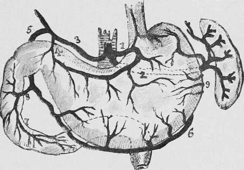

Haemorrhage
Description
This section is from the book "Cancer And Other Tumours Of The Stomach", by Samuel Fenwick. Also available from Amazon: Cancer and other tumours of the stomach.
Haemorrhage
Extravasation of blood into the stomach is a frequent result of malignant disease. In the majority of the'cases it is very slight, and merely imparts a brownish or black tinge to the gastric contents ; but occasionally the patient vomits a considerable quantity of florid blood, while in rare instances the haemorrhage is so profuse as to destroy life. It is therefore convenient to distinguish three varieties, namely, the slight, the moderate, and the excessive.
(1) Slight hemorrhage probably occurs in every case at some period of its course, and in many it may be said to be almost continuous. It is met with in all forms of the disease, but is most frequent in growths of the pylorus and of the lesser curvature. The blood does not appear to be derived from any particular part of the growth, but oozes from its general surface and from the congested mucous membrane around it. As a rule the bleeding originates spontaneously, and is particularly apt to occur during the period of digestion, when the determination of blood to the stomach is greatly augmented. It is probable, however, that direct irritation of the vascular growth by particles of food is not infrequently an exciting cause, as it is exceptionally common when the patient indulges in a mixed diet, and is very prone to follow exploration of the stomach with a tube. In other cases it ensues from local embarrassment of the circulation consequent upon the thrombosis of a small vessel; while occasionally it is due to the rupture of one of the varicose veins which ramify around the base of the disease.
(2) Moderate hemorrhage was estimated by Brinton to occur in 7 per cent, and by Lebert in 12.5 per cent, of all gastric cancers. In our own series of 150 clinical cases moderate haematemesis was recorded in sixteen instances, or in 10.8 per cent. It may therefore be concluded that an attack of bleeding similar in character to that which ensues from a simple ulcer occurs in 10 to 12 per cent, of all cases of carcinoma of the stomach. The liability to this form of haemorrhage is greatest when the disease affects one of the orifices, though it is by no means infrequent in growths of the body of the viscus ; and its occurrence is an almost certain indication that ulceration has taken place.
The vessels usually eroded are the submucous and subserous branches of the superior pyloric or coronary arteries; but occasionally sudden sloughing of a portion of the growth will simultaneously destroy several of its small nutrient vessels. It is important to note that severe haemorrhage is rarely observed in disease of the pylorus which has given rise to marked stenosis. This phenomenon may be explained partly by the fact that a contracting cancer of the pylorus is usually scirrhus, and consequently less liable to undergo extensive ulceration than the other varieties, and partly by the comparative anaemia of the gastric walls that results from the long-continued stretching and dilatation of the organ.
Fig. 24.-Diagram of the stomach and duodenum, showing their arterial blood-supply. 1, coronary artery ; 2, splenic ; 3, hepatic ; 4, pyloric ; 5, gastro-duodenal; 6, right gastroepiploic ; 7, 8, superior pancreaticoduodenal ; 9, left gastro-epiploic.
(3) Excessive hemorrhage, leading to a rapidly fatal termination, is extremely rare. Brinton found only four examples among the 374 cases of cancer of the stomach he collected (about 1 per cent.), and our own series of autopsies upon the disease only contains two cases (0.75 per cent.) in which death resulted immediately from loss of blood. The accident usually arises from the sloughing of a soft growth situated upon the posterior wall or lesser curvature. In fifteen cases where exact details are given we find that the coronary artery was the source of the haemorrhage in eight, the superior pyloric artery in four, the splenic artery in two, and the right gastro-epiploic artery in one. In rare instances the morbid growth may destroy a large vessel in some neighbouring organ, such as the liver, pancreas, or spleen, or it may erode the aorta, vena cava, or the portal vein (Cassimir-Broussais). Considering the widespread destruction wrought by a cancerous growth, it seems at first sight somewhat strange that severe haemorrhage is so infrequent, while in a simple gastric ulcer haematemesis occursinabout 71 per cent, of the cases and is the immediate cause of death in 18 per cent, of the fatal cases. A consideration of the pathology of the two diseases, however, at once explains this apparent anomaly. Simple ulcer is a strictly local affection, and the tissues which surround the area of necrosis remain in a comparatively healthy state, so that when a large vessel is involved by the disease the erosion of its wall is followed by severe haemorrhage. A cancerous growth, on the other hand, not only destroys the smaller vessels which lie in its course, but by invading the walls of the arteries gives rise to thrombosis of their contained blood. It consequently happens that the arterioles exposed by the ulcerative process are already obliterated; indeed, it is only in cases of rapid and extensive sloughing that the destruction of tissue extends beyond the area of protection.
Continue to: